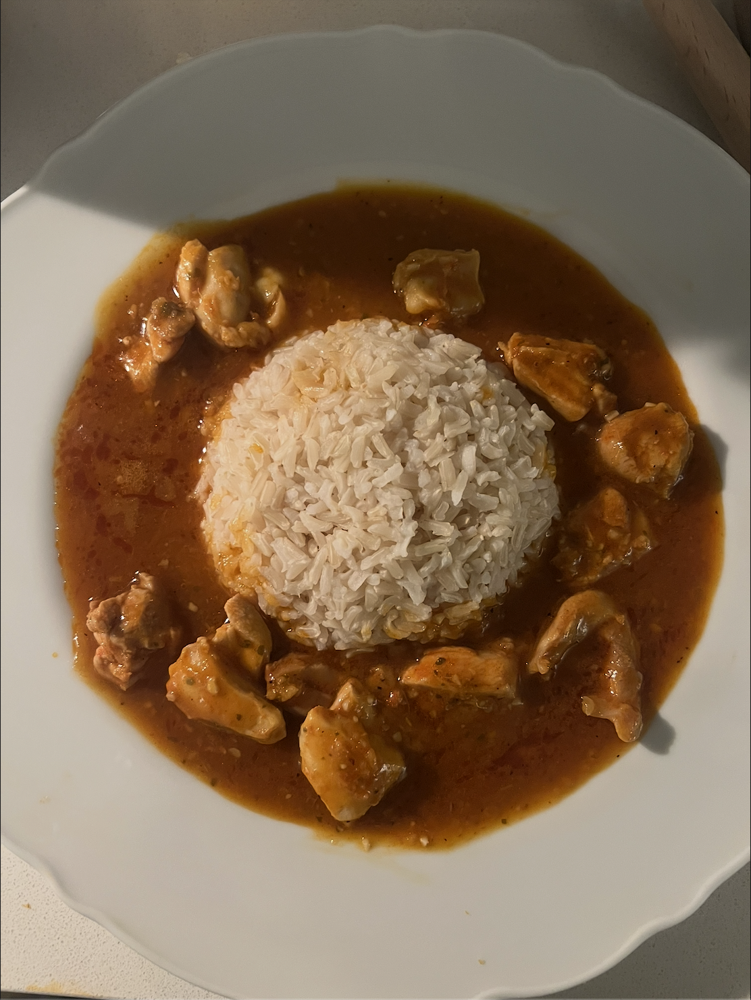

Thai Red Chicken Curry
Creamy, a little spicy, and ready in about half an hour. This is my go-to dinner when I want something cozy that tastes like way more effort than it actually is.

At a Glance
- Prep time: 10 minutes
- Cook time: 20 minutes
- Spice level: medium (add more curry paste if you're brave)
Ingredients
- 1 tbsp vegetable oil
- 3 tbsp Thai red curry paste
- 500 g (about 1 lb) boneless chicken, cut into bite-sized pieces
- 1 can (400 ml) coconut milk
- 1 red bell pepper, sliced
- 1 tbsp fish sauce (or soy sauce)
- 1 tsp brown sugar
- Juice of ½ a lime
- A handful of fresh basil leaves
- Cooked rice, to serve
Instructions
- Heat the oil in a large pan over medium heat.
- Add the curry paste and stir for about 1 minute, until it smells amazing.
- Add the chicken and cook for 5 minutes, stirring so it gets coated in the paste.
- Pour in the coconut milk, add the bell pepper, and bring it to a gentle simmer.
- Simmer for 10–12 minutes, until the chicken is cooked through and the sauce thickens.
- Stir in the fish sauce, brown sugar, and lime juice. Taste and adjust.
- Turn off the heat, stir in the basil, and serve over rice.
Tips & Fun Facts
Frying the curry paste in oil first is the secret to a deeper flavour.
The heat in chillies comes from capsaicin, C18H27NO3
— and it dissolves in fat, which is why the coconut milk makes this curry
feel less spicy.
The 1st time I made this, I used way too much curry paste. Now I start with less and add more at the end.